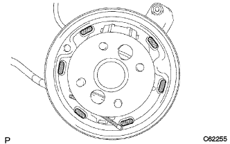

Parking brake cable ASSY No.3 installation |
| 1. Parking brake cable Assembly installation |
In the bolt, attach the parking brake cable ASSY No.3 to the backing plate.
As shown in the figure, with 6 bolts and one nut, each cable bracket of the parking brake cable is attached to each cable bracket.

| 2. Parking brake cable ASSY No.3 connection |
Parking brake cable ASSY No.Connect 3 to the parking brake cable equalizer.
| 3. Backing plate grease coating |
|  |
Apply non -Meltrob to the contact between the backing plate and the rear brake shoe ASSY.
| 4. Brake shoe (rear) installation |
Use the needle nose pliers to attach the parking brake lever LH to the No.3 parking brake cable.
 |
Use the SST to attach the brake shoe (rear) with the rear brake shoe hold down spring cup, the rear brake shoe hold down spring and the rear brake shoe holding pin.
Attach the rear brake zeuling spring to the brake shoe (rear).
| 5. Rear brake automatic adjust lever LH installation |
Lear brake automatic adjustable lever LH and rear brake automatic adjacent livert spring are attached to the brake shoe (front).
| 6. Brake shoe (front) installation |
Attach the parking brake shoe trattle set LH to the brake shoe (front).
Connect the brake shoe (front) to the rear brake zezwritness spring.
 |
Use SST to attach a brake shoe (front) with the rear bra lighter square hold down spring cup, rear brake shoe hold down spring and rear brake shoe hold down spring pin.
Use SST to attach the tension spring to the brake shoe (rear).
| 7. Rear drum brake installation inspection |

Inspect that each part is properly attached.
| 8. Adjustment of brake drums and lining gaps |
 |
Turn the adjuster with a flathead screwdriver from the backing plate service hall, and let the brake shoe ASSY contact the rear brake drum.
 |
Turn the adjuster by turning the adjuster with another flathead screwdriver while pressing the rear brake automatic adjust lever LH with a flathead screwdriver.
The brake shoe Assy is no longer in contact with the rear brake drum, and the adjuster is further reduced to contract to contract.
| 9. Lear brake drum installation |
| 10. Installation of the rear tire |
| 11. Wire gathing nut No.1 Temporary tightening |
 |
Parking brake wire gathing nuts1 and temporarily tighten the rock nut.
| 12. Lon floor silence pad SUB-ASSY RR RH |
| 13. Floorboard No.1 installation |
Combine the two clips and attach the No. 1 floorboard.
| 14. Long -floor carpet ASSY FR installation |
| 15. Side No.1 Trim ASSY RH installation |
 |
Attach the clip and claws and attach the side No.1 trim ASSY.
| 16. Front sheet otabelt assigned (floor anka part) |
In the bolt, attach the front seat Otabelt Assy RH floor anka.
| 17. Lap belt Otanka cover installation |
 |
Combine the claws and attach the wrap belt Otanka cover.
| 18. Rear seat 3 point type belt assigned (floor anka part) |
Tighten the rear seat 3 point type belt ASSY OUT RH (floor anka part) with bolts.
| 19. Front door opening trim Weather strip RH installation |
 |
Combine the paint mark of the Weather Strip (white, one place) and attach the front door opening trimweather stretup RH.
| 20. Front doorskuff plate RH installation |
 |
The claws at the front and rear ends are used.
Make the claws and attach the front door scuff plate RH.
| 21. Front sheet Assigned to RH |
Operate the seat track adjusting handle to slide the front seat ASSY to make it a front mort.
Put the sheet Assies on the vehicle and match the pins on the front seat leg ASSY RH part and the hole on the vehicle side.
Connect the vehicle side wire harness and the seat side wire harness.
Temporarily tighten the rear side of the seat Assy with two bolts.
Operate the seat truck adjusting handle to slide the front seat ASSY to make it a rear mole.
Temporarily tighten the front side of the sheet Assy with two bolts.
Operate the seat track adjusting handle to slide the front seat ASSY to make it a front mort.
Tighten the two bolts on the rear side of the sheet Assing in order of inner → outa.
Operate the seat truck adjusting handle to slide the front seat ASSY to make it a rear mole.
Tighten the two bolts on the front side of the sheet asser in the order of inner → outa.
The claws of the front seat leg cover are adjusted.
| 22. Rear seat cushion Assy installation (rear seat split can be split) |
Lock the front side of the rear seat cushion Assy is locked by the rear seat cushion lock striker.
Pass the rear seat belt through the rear seat cushion cover and pad back rubber band.
 |
At the bolt, attach the rear seat hinge LH.
Attach a snap ring to the rear seat back hinge RH.
The rear seat hinge RH is inserted into the corner pipe of the rear seat cushion Assy right bracket.
| 23. List seat back Assigned (Rear seat split can be split) |
Attach the rear seat back with two bolts.
 |
Attach two clips.
| 24. List of rear seat back Assembly RH installation (rear seat split can be split) |
Attach the rear seat back with two bolts.
Attach two clips.
| 25. Rear seat back hinge SUB-ASSY RH mounting (overall rear seat) |
 |
With a bolt, tighten the rear seat Batsuku hinge RH.
| 26. Rear seat back hinge SUB-ASSY LH mounting (integrated rear seat) |
With a bolt, tighten the rear seat Batsuku hinge LH.
| 27. Rear seat cushion Assy installation (integrated rear seat) |
Rena seat cushion assemble the hook at the rear of the rear seat.
Pass the rear seat belt through the rear seat cushion cover and pad back rubber band.
 |
Rena seat cushion Assy The hook at the front of the front.
| 28. List of rear seat back Assisted (integrated rear seat) |
Attach the rear seat back associate with two bolts.
 |
Attach two clips.
| 29. Airbag Warnin Grand Point Inspection |
reference| 30. Parking brake pedal stepping on the pedal |
Slowly step on the parking brake pedal and count the operating noise.
| 31. Parking brake pedal stepping adjustment |
 |
Press the parking brake pedal once strongly.
Park the parking brake pedal again and unlock.
Loose the lock nut in the parking brake pedal part, and adjust the adjustment nut so that stepping is a reference value.
Fix the adjustment nut and tighten the rock nut.
After operating the parking brake pedal at least once, check for stepping.
Make sure there is no drag of the parking brake.
When the parking brake pedal is operated, confirm that the brake indigor lamp lights up.